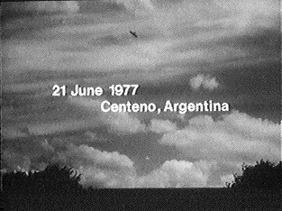

A La Tronche (Isère), un témoin et son fils observent un
petit point sombre immobile se détachant dans le ciel clair. Des éclairs de plusieurs couleurs sont remarqués, mais
aucun bruit GEPAN : PAN classé C.
A Saint Claude (Jura), des automobilistes constatent que
la route s'éclaire comme en plein jour pendant 4 à 5 s et voient une boule suivie d'une trainée qui se déplace
d'ouest en est, émettant comme des crépitements et disparaissant rapidement, cachée par le paysage. D'autres témoins
des environs entendront une déflagration ou verront un éclair. La gendarmerie ne relevera aucune trace de chute sur
le secteur. Ces personnes ont probablement été témoins d'une rentrée atmosphériqueGEPAN : PAN classé B.
Centeno le 21

En Californie, de nombreux témoins indépendants
voient le ciel s'éclairer avant de voir passer un grand météore Hendry, Allan: The UFO Handbook, 1979, p. 43.
Sous hypnose, Betty Andreasson déclare se souvenir de l'enlèvement qu'elle a vécu
le .
Près de Centeno (Argentine), un objet est photographié
(ci-contre) par une source anonyme. Un objet similaire a été observé 2 ans plus tôt à Ontario (Canada).
Récupération de 5 corps suite à un crash dans le nord-ouest de l'Arizona.
A Saint Pol-sur-Ternoise (Pas-de-Calais), des témoins
voient pendant 2 faisceaux lumineux évoluer dans le ciel, éclairant l'espace en tournant sur
eux-mêmes. La lumière apparait toutes les . Prévenus et arrivés sur les
lieux , les gendarmes ne constatent aucun phénomène SEPRA: PAN classé C.